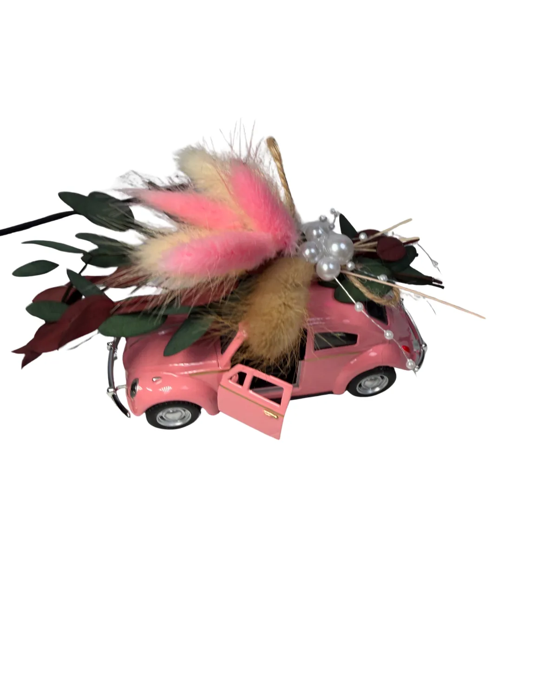
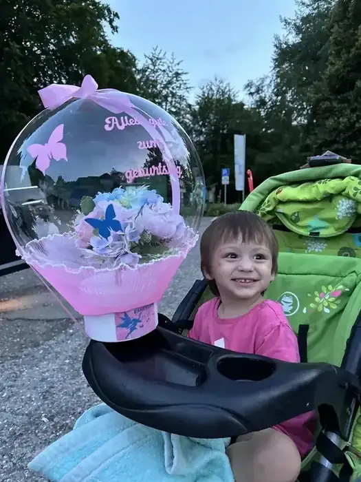
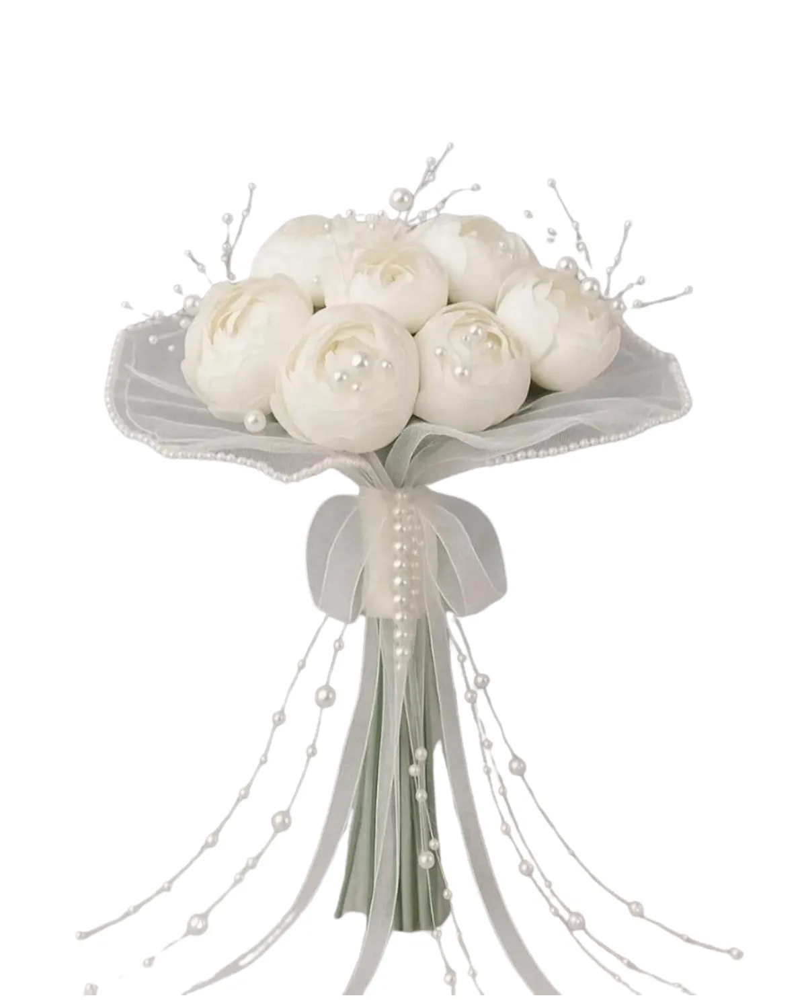
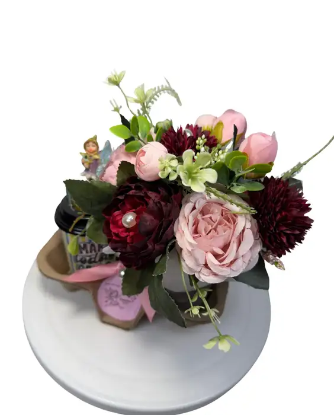
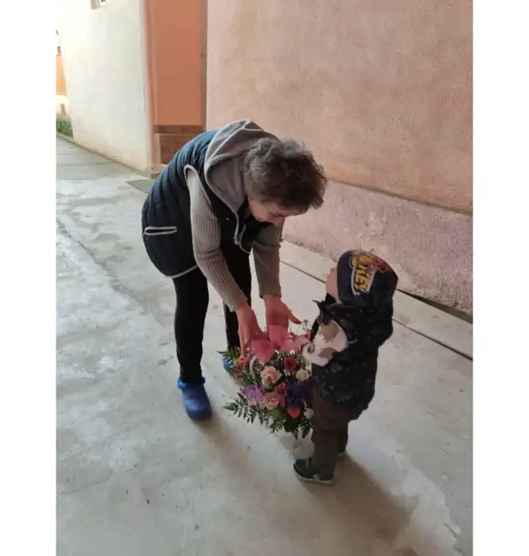
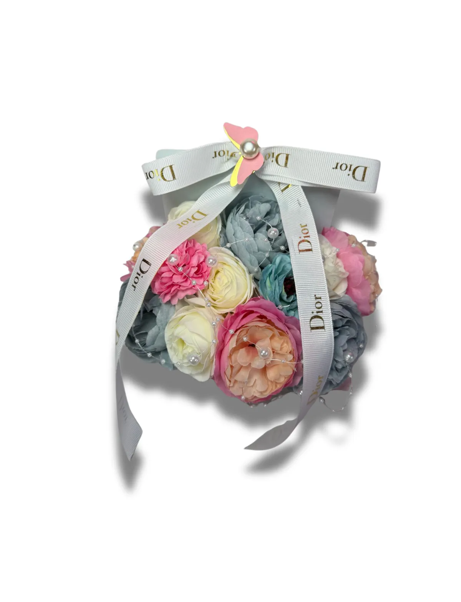
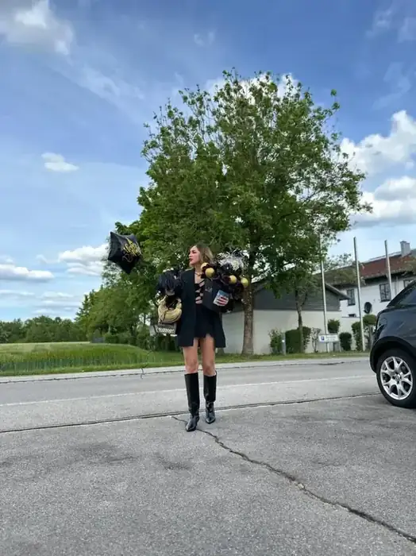
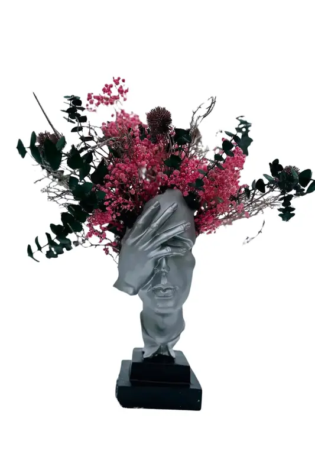
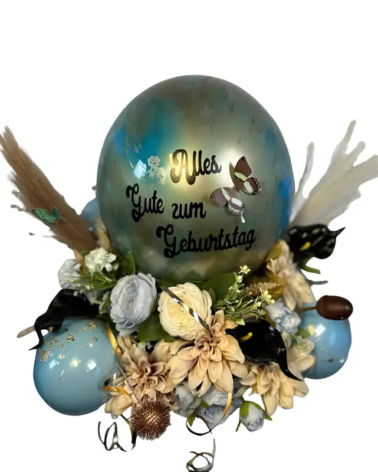

Fotografie · Gestaltung · Dandelion 11:11
Die Seele steckt im Detail
Fotografie und Gestaltung von Raluca – aus dem Allgäu, mit Liebe gemacht.






Wohin möchtest du?
Drei Türen

Fotografie
Menschen & Momente, Details & Produkte, Natur & Orte.
Zur Galerie →
Gestaltung
Webdesign, UX und Print – mit Blick für die kleinen Dinge, die den Unterschied machen.
Projekte ansehen →
Dandelion 11:11
Handgemachte Geschenkballons und Blumenboxen aus Bad Wörishofen.
Zum Shop →„Oft ist es nicht das große Ganze, das uns berührt – sondern eine Schleife, eine Handschrift, ein Blick.“Raluca
Lass uns etwas Schönes festhalten
Ein Shooting, ein Design-Projekt oder einfach eine Idee? Ich freue mich auf deine Nachricht.
Kontakt aufnehmen